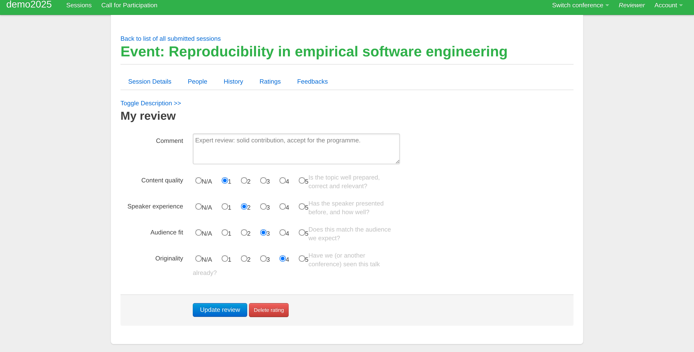

The whole job in 12 steps, in the order you actually do them.
This is the short version. For the detail behind any step - every field, every button, every screen - see the full frab User Manual; the chapter is named at the end of each step.
Phase A - Set it up · once, before you tell anybody
1
Create the conference
Where: Conferences → New conference
Give it a title (DemoConf 2025) and a short lower-case acronym (demo2025). The acronym ends up in every URL - pick it once and never change it.
Set the time zone, and the timeslot duration (15 minutes suits almost everyone) plus the default session length in timeslots (4 = one hour).
Tick the session durations speakers may choose from, and add the languages sessions may be held in.
Careful: the timeslot duration defines the entire schedule grid and is painful to change later. Decide it now. → Manual, chapter 2.1
2
Enter days, rooms and themes
Where: Settings → tabs Days, Rooms, Themes
Days - one row per conference day, with the time the programme starts and ends.
Rooms - one row per room, with its capacity. Rank sets the left-to-right order in the schedule; give the main stage rank 1.
Themes - your subject areas (Backend, Security, Community...), each with a colour. Five to eight is plenty.
Settings → Rooms. Days and Themes work the same way: add a row, save. → Manual, chapters 2.2-2.4
3
Decide how you will review
Where: Settings → Reviewing
Add the criteria reviewers will score each submission on - Content quality, Speaker experience, Audience fit. Three or four are enough.
Write the description as a question, because it appears next to the score buttons.
Do this before reviewing starts. Reviews already written are not re-scored when you add a criterion later. → Manual, chapter 2.6
4
Add your team
Where: Account → Conference users
Each colleague needs a frab account first; then give them a role here.
Reviewer - can only read submissions and score them. Coordinator - can also edit sessions and people and move them through the workflow. Orga - everything, including settings, mail and the schedule.
One role per person per conference.
→ Manual, chapters 1.2 and 2.9
5
Write the three decision letters
Where: Settings → Notifications
Fill in the acceptance, the rejection and the schedule announcement, each with a subject and a body.
The acceptance must contain %{link} - that is the personal link a speaker clicks to confirm. Without it nobody can confirm.
Add one language block per language your speakers use.
Placeholders such as %{public_name}, %{event}, %{room}, %{date} are replaced per recipient. The full list is shown next to the form. → Manual, chapter 9.6 and Appendix A
Phase B - Collect and decide · the months before the event
6
Open the call for participation
Where: Call for Participation → Edit
Set the start and end date of the submission window, plus the hard deadline you announce publicly.
Write the welcome text: what you are looking for, how long sessions may be, and when speakers will hear back.
Publish this address to your speakers: <your-frab>/<acronym>/cfp. People without an account can register there.
Test it yourself first. Make a submitter test account, submit a session, and keep that account - use it whenever you change the call or a letter. → Manual, chapter 3
7
Watch the submissions arrive
Where: Sessions
Every submission lands in the state new. Use the search box and the filter icons in the column headers to slice the list.
When you are ready to review, move them from new to review - one by one, or for a whole filtered list at once with Edit these sessions.
The session list is where you will spend most of your time. → Manual, chapter 5
8
Review
Where: Sessions → Session reviews
Reviewers open a submission, score every criterion from 1 to 5 (or leave N/A), write a comment, and press Create review, then Rate next session.
You see the result as a table: the average per criterion, sortable by column.
Look for the two problem cases: submissions nobody reviewed, and submissions the reviewers disagree about (frab highlights those rows).

The review form: one row per criterion, plus a comment. → Manual, chapter 8
9
Accept, reject, and send the decisions
Where: Sessions, then Settings → Notifications
Accept or reject each session on its own page, or in bulk from a filtered list.
With bulk notification on, nothing is mailed yet - decisions wait in the states accepting and rejecting until you are done with the whole programme.
Then open Settings → Notifications and press the Send buttons at the top. Each one tells you exactly how many people will get a mail.
No undo. Read the counts on the buttons before you click, and set a BCC address in the conference settings so you keep a copy of everything that goes out. → Manual, chapters 5.4 and 9.6
Phase C - Schedule and run it · the weeks before and the days themselves
10
Chase confirmations and availability
Where: Sessions · Reports · Mail Templates
Accepted sessions sit in unconfirmed until the speaker clicks their confirmation link. Only confirmed sessions can be scheduled.
Remind the stragglers: filter the session list to the unconfirmed ones, then Send mail to all these people >> with a reminder template.
Run the report speakers without availabilities and chase everybody on it. Availability is what stops you from building a broken schedule.
→ Manual, chapters 4.3, 6.3 and 9.5
11
Build the schedule
Where: Schedule
Pick a day, then drag sessions from the unscheduled box into a room column. Every move is saved immediately.
Watch the colours: green is fine, orange means a speaker is booked outside their availability or is on two stages at once, red means two sessions share a room and time.
Fix every red one. Aim for an empty unscheduled box.
One column per room, one tab per day. → Manual, chapter 7
12
Publish, announce, and run the event
Where: Settings → Schedule, then Notifications and Reports
Raise the schedule version and tick Schedule public. Check the result with Preview public schedule.
Send the scheduling notifications from Settings → Notifications so every speaker learns their room and time.
Shortly before the event, mail a tech-check reminder and print what you need: the tech riders, the transport needs, the speaker list, and a PDF of the schedule.
Afterwards, read the audience feedback and ask for slides with one more mail template.
Raise the schedule version on every later change - that is what tells apps, sponsors and the printer that something moved. → Manual, chapters 7.4, 7.5 and 6
One-page checklist
Print this, tick it off, hand it to whoever takes over next year.
Step
Done when
Phase A - set it up
☐
1. Conference created
Title, acronym, time zone, timeslot duration and session durations are set.
☐
2. Days, rooms, themes
Every conference day, every room with its capacity and rank, and your themes with colours.
☐
3. Review criteria
Three or four metrics agreed with the team and entered under Settings → Reviewing.
☐
4. Team
Reviewers, coordinators and organisers all have accounts and the right role.
☐
5. Decision letters
Acceptance (with %{link}), rejection and schedule announcement written, in every language you need.
Phase B - collect and decide
☐
6. Call for participation open
Dates and welcome text saved, the /cfp address announced, and you submitted a test session yourself.
☐
7. Submissions moved to review
Nothing important is still sitting in the state new.
☐
8. Reviewing finished
Every submission has at least one review; the disagreements have been discussed.
☐
9. Decisions sent
Acceptances and rejections released; the counts on the buttons matched what you expected.
Phase C - schedule and run
☐
10. Confirmations in
Nothing left in unconfirmed, and the "speakers without availabilities" report is empty.
☐
11. Schedule built
No red conflicts, orange warnings understood, unscheduled box empty.
☐
12. Published and announced
Schedule version raised, schedule public, scheduling notifications sent, exports printed.
If something goes wrong
A session is missing from the schedule
It is probably not confirmed yet - only confirmed sessions appear in the unscheduled box.
A speaker says they never got the mail
Check the session state, then the BCC archive. Re-send with Custom notification on the session page.
A session is orange in the grid
The speaker is booked outside their stated availability, has stated none at all, or is on two stages at once.
A reviewer sees nothing to review
Their queue only contains submissions of type Paper Presentation and Special Session, and drops anything another reviewer already reviewed.
Somebody changed something
Home → Recent changes for the whole conference, or the History tab of a single session.
 Settings → Rooms. Days and Themes work the same way: add a row, save. → Manual, chapters 2.2-2.4
Settings → Rooms. Days and Themes work the same way: add a row, save. → Manual, chapters 2.2-2.4